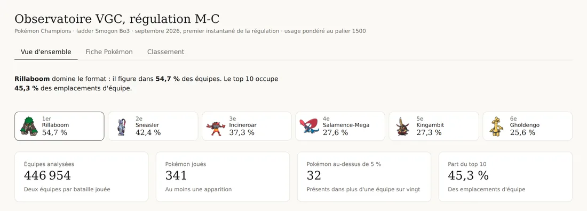
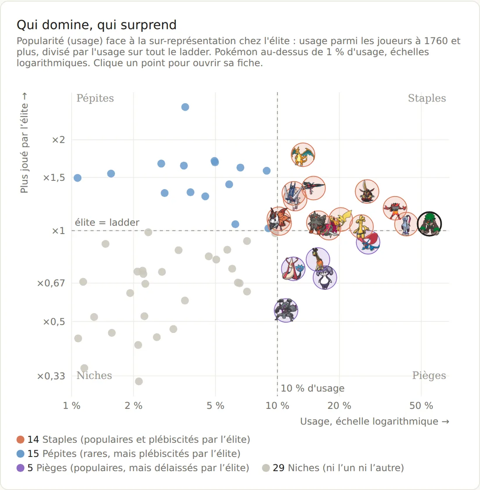
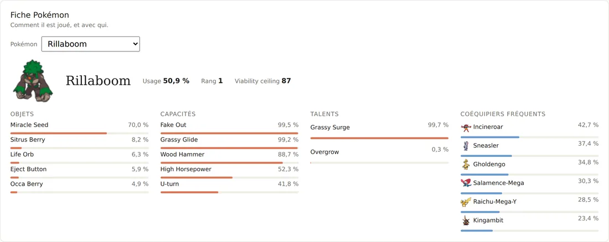

Chiffres clés de septembre 2026
| Équipes analysées | 446 954 |
| Batailles | 223 477 |
| Pokémon joués au moins une fois | 341 |
| Tests automatisés exécutés à chaque mise à jour | 15 |
Pourquoi ce sujet
Je suis moi-même joueur de Pokémon VGC à l'international, donc ce sujet m'a naturellement intéressé. Suivre l'évolution du métagame m'est aussi très utile chaque mois.
Le problème se transpose directement à un marché :
| Dans le jeu | Dans une entreprise |
|---|---|
| Usage d'un Pokémon | Part de marché d'un produit |
| Adoption par les meilleurs joueurs | Adoption par les clients les plus exigeants |
| Coéquipiers fréquents | Produits achetés ensemble |
| Adversaires qui le mettent en difficulté | Concurrents directs |
| Un relevé par mois | Suivi de tendance |
Fonctionnement
- Collecte. Le pipeline télécharge les fichiers d'usage et de movesets pour quatre niveaux de classement, de 0 (tous les joueurs comptent autant) à 1760 (les mieux classés comptent davantage). Un mois déjà récupéré n'est jamais retéléchargé.
- Transformation. Des expressions régulières convertissent les tableaux texte en lignes : usage, objets, capacités, talents, coéquipiers et confrontations.
- Modèle de données. Les données sont rangées en modèle en étoile : quatre dimensions (Pokémon, date, régulation, niveau de classement) et cinq tables de faits.
- Traçabilité. Chaque fichier ingéré est enregistré avec son empreinte SHA-256 et son nombre de batailles, ce qui permet de vérifier n'importe quel chiffre.
- Automatisation. GitHub Actions lance le pipeline le 2 de chaque mois : tests, ingestion, puis enregistrement des nouvelles données dans le dépôt.
- Restitution. Un tableau de bord en trois onglets : vue d'ensemble, fiche par Pokémon et classement. Un rapport Power BI est en préparation, le guide de montage et les mesures DAX sont déjà écrits.
Résultats de septembre 2026
Rillaboom est présent dans plus d'une équipe sur deux (54,7 %). Les dix Pokémon les plus joués occupent 45,3 % des emplacements, et 32 Pokémon dépassent 5 % d'usage.

Popularité et adoption par les meilleurs joueurs
L'usage indique qu'un Pokémon est choisi, pas qu'il est efficace. Pour aller plus loin, je compare son usage chez les joueurs les mieux classés (niveau 1760) à son usage sur l'ensemble des joueurs (niveau 0). Un ratio supérieur à 1 signifie que les meilleurs joueurs le prennent plus souvent que la moyenne.
Par exemple, Charizard-Mega-Y passe de 11,9 % d'usage sur l'ensemble des joueurs à 21,1 % chez les mieux classés, soit un ratio de 1,78. Golisopod-Mega fait l'inverse : de 12,7 % à 6,9 %.
En croisant ce ratio avec la popularité (seuil de 10 % d'usage), on obtient quatre groupes parmi les 63 Pokémon qui dépassent 1 % d'usage :
| Groupe | Définition | Nombre | Exemples |
|---|---|---|---|
| Staples | populaires, et plus joués par les meilleurs | 14 | Rillaboom, Incineroar, Kingambit |
| Pépites | peu joués, mais plus joués par les meilleurs | 15 | Venusaur, Kommo-o, Garchomp |
| Pièges | populaires, mais moins joués par les meilleurs | 5 | Salamence-Mega, Indeedee-F, Farigiraf |
| Niches | ni l'un ni l'autre | 29 |
Les pépites sont les plus intéressantes à suivre : ce sont elles qui pourraient gagner en popularité les mois suivants.


Contrôle qualité
J'ai trouvé deux erreurs en comparant les résultats du pipeline aux fichiers sources. Aucune ne provoquait de message d'erreur.
Une section ignorée. La régulation M-C a ajouté une section sur les confrontations, dont les lignes ont un format légèrement différent. Le pipeline la sautait sans le signaler. Je l'ai corrigé et ajouté des tests sur ce format.
Un mois manquant. Le calcul des mois disponibles s'arrêtait un mois trop tôt, et le mois le plus récent n'était pas récupéré. Corrigé, avec un test sur les dates de publication.
Depuis, les tests s'exécutent avant chaque mise à jour mensuelle. S'ils échouent, les nouvelles données ne sont pas enregistrées.
Limites et suite
- Il n'y a qu'un mois de données pour l'instant. L'intérêt du projet viendra de l'historique, avec un nouveau relevé chaque mois.
- Le niveau 1760 est une pondération, pas un groupe de joueurs séparé. Le ratio indique donc une tendance.
- Prochaine étape : ajouter les résultats de tournois, pour comparer ce qui est joué en ligne à ce qui gagne en compétition.
Données : statistiques mensuelles publiques de Smogon University, agrégées, sans donnée personnelle. Sprites : dépôt public smogon/sprites. Illustration : commande personnelle à l'artiste @walkozuki. Pokémon © Nintendo, Creatures, GAME FREAK et The Pokémon Company. Projet de fan non commercial.